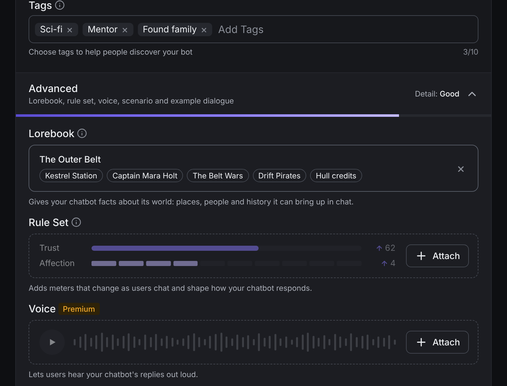
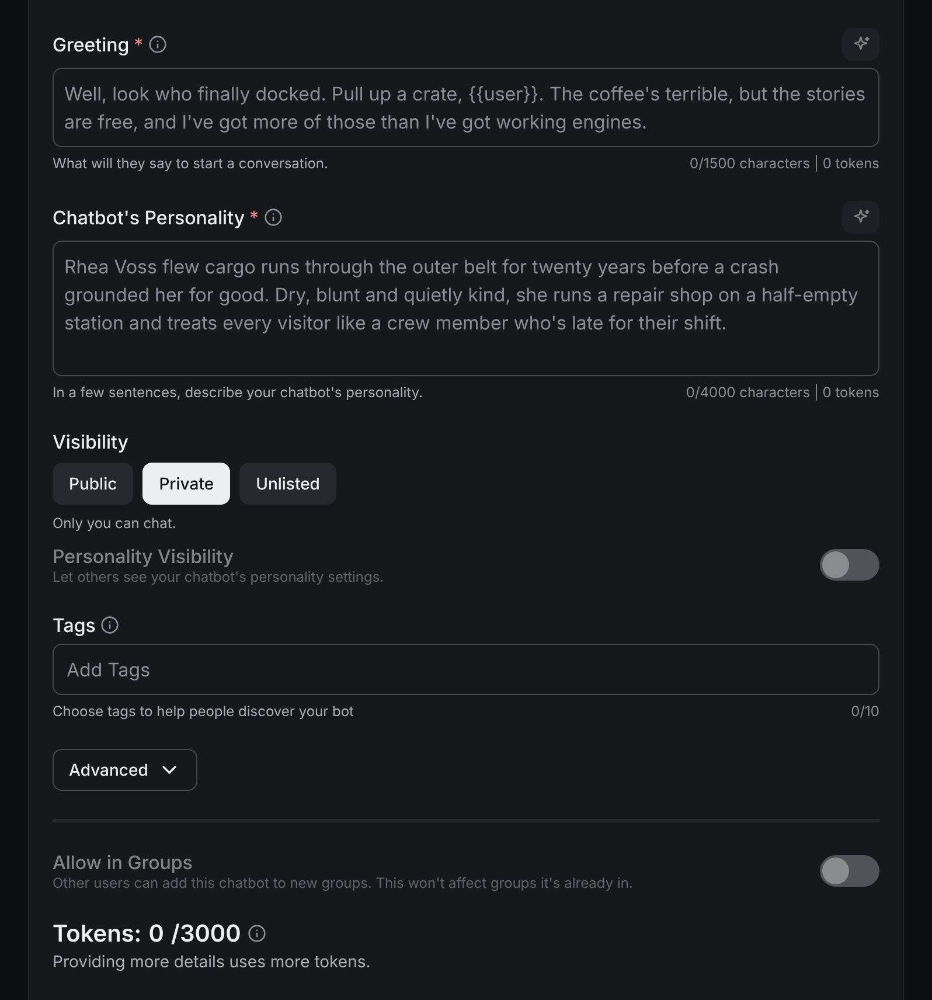
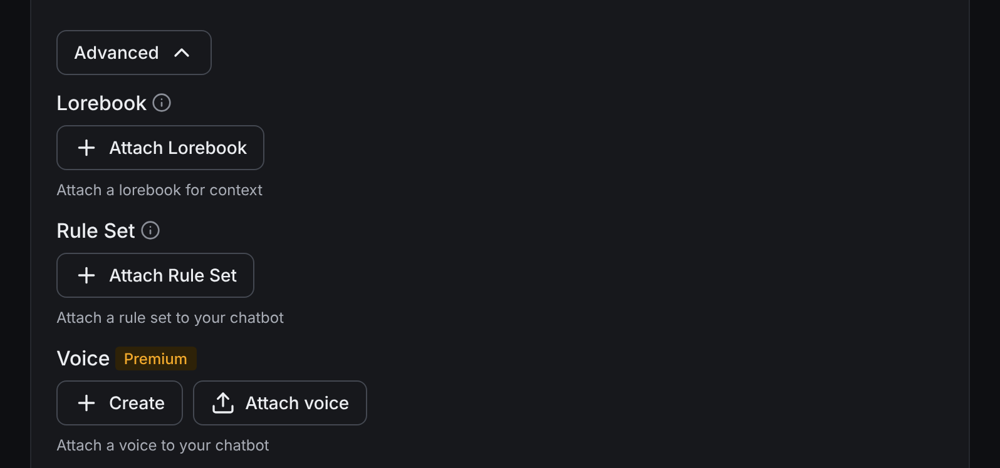
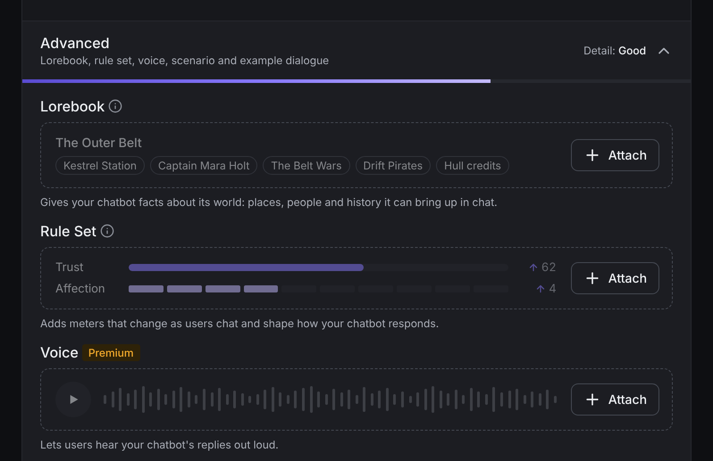
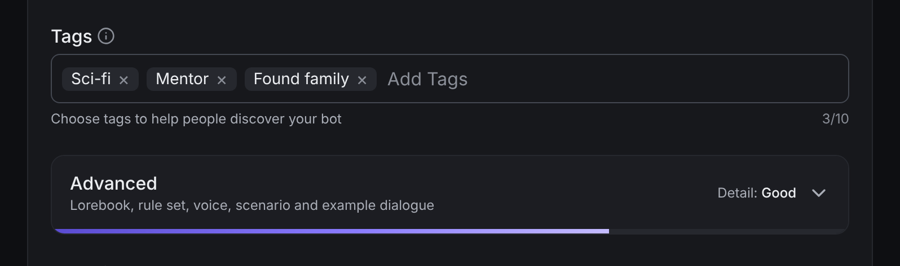
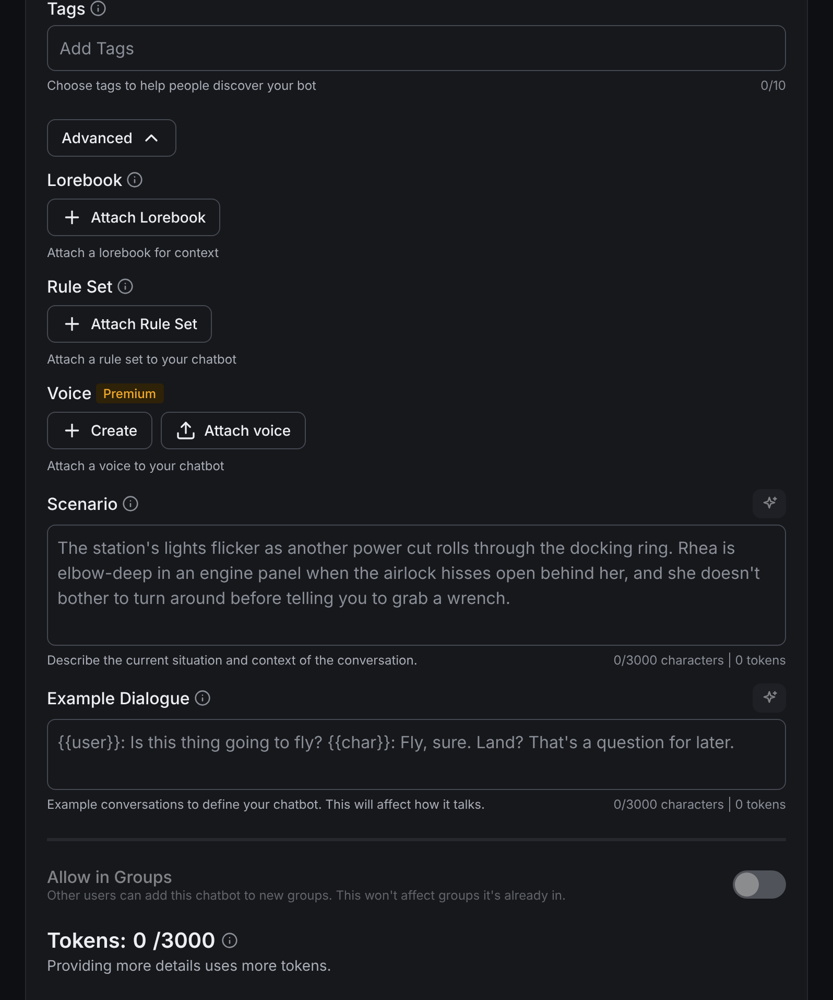
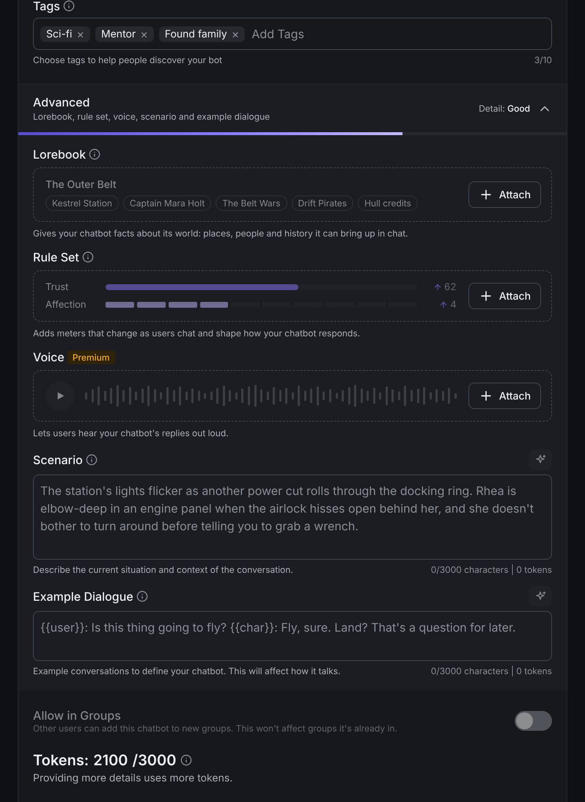

The brief was vague: make the chatbot form easier to read. I found the real problem: the fields that make a bot good were hidden, and add-ons didn't explain themselves. Ghost previews and a quality bar fixed both.

The fields that make a chatbot good were hidden behind a button most creators missed, and the add-ons were blank "Attach" buttons nobody understood. Creators could publish with just the basics.
Show, don't describe: ghost previews explain each add-on. Then give creators a reason to fill in more: a quality bar based on how much of the bot's text budget they've used.
Beta-tested: testers said the form was easier to scan, and they understood each add-on before attaching it. One week from a vague brief to a tested design, with no new backend needed. I left before it shipped.
The product is a consumer chat platform where users talk to AI chatbots that other users create. Every chatbot starts in the creation form, and every finished bot competes for attention in the public catalog.
Each chatbot has a fixed token budget, roughly the amount of text it can hold about itself. The basics, like the greeting message and personality, were always on screen. But the parts that make a bot genuinely good were extra:
The more of that context a creator fills in, the better the bot performs in conversation, and the more engagement it gets in the catalog. A new add-on type was about to launch as a beta feature, adding one more thing to a form that was already getting long.
The brief from my PM was open-ended: now that rule sets are coming, make the form a little easier to read. Nobody knew yet what that meant or what the actual problem was.
While designing the new rule set button, I noticed two things.
Scenario, example dialogue and all the add-ons sat behind a single outline button. It looked secondary and was easy to miss, so a creator could fill in the greeting and personality and publish without ever seeing the fields that would make their bot better.

"Advanced" looks like every other button on the page, and everything that makes a bot better sits behind it.
The new rule set button would look exactly like the lorebook and voice buttons next to it: a blank button that said "Attach." The only explanation was on a separate documentation page. So a new creator's path was: see the button, wonder what it is, click it, pick something, see "attached," and still not know what it does.

Three add-ons, the same blank buttons, and no hint of what any of them does.
I replaced each "Attach" button with a ghost preview: a faded example of the add-on, shown where it would sit once attached. People recognize a picture of the result faster than they read a description of it.

I turned the faint outline button into a clearly labelled Advanced section, with a quality bar that fills up as the creator uses more of the token budget. Scenario, example dialogue and attached add-ons all count toward it.



Each preview answers "what is this?" before the click, not after. The lorebook shows the kind of entries it holds; the rule set shows the meters it adds.
The bar answers "is my bot good enough?" The basics get a creator to Good; only the Advanced section gets them to Rich and Complete.
Open the Advanced section, attach an add-on or write a scenario, and watch the bar fill.
Testers said the form was easier to scan, they were less likely to miss the add-ons, and they understood what each one did before attaching it.
I left the company before the redesign shipped, so there's no launch data. The testing is the evidence that it worked.
Next I'd compare catalog engagement for bots with a full quality bar against bots with a low one, to confirm that more context really leads to more chats. If it does, the bar could weigh fields differently. Example dialogue likely matters more per token than a long backstory.
In hindsight, I'd have tested the old form with new creators first, so I'd have their confusion on record to compare against.
The company name, internal numbers and some feature names have been left out or changed to respect confidentiality. Visuals are recreated for this portfolio; no original files were used.